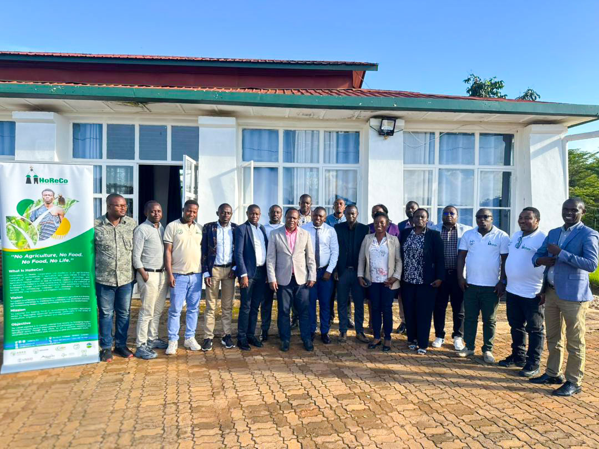

HoReCo Capacity Building Program Strengthens Reporting and Coordination for OMIS Project Implementation
Friday, 17 April 2026, at the Mulindi Horticulture Center of Excellence, the HoReCo Capacity Building Program successfully convened District Project Coordinators (DPCs) under the #OMISProject, funded by the Rwanda Agriculture Board, for a two-day training aimed at strengthening reporting systems and enhancing key competencies for effective project implementation.
The training officially opened with remarks from Mr. Emile, Head of Capacity Building and Advisor to the CEO. He encouraged participants to actively engage in all sessions through meaningful discussions, experience sharing, and collaborative learning. He further emphasized the importance of translating the knowledge gained into practical actions that contribute to improved implementation and sustainable impact at all levels of the project.
Throughout the sessions, participants benefited from interactive exchanges focused on improving coordination mechanisms, strengthening reporting consistency, and enhancing accountability frameworks. The training served as a vital platform for aligning understanding and reinforcing a unified approach to project reporting and execution.
closing remarks.
In his closing remarks, Chairman Jacques Dawson reiterated HoReCo’s commitment to institutional growth and staff welfare, guided by a shared ambition to achieve greater milestones in the years ahead. He further emphasized that high-quality, timely, and consistent reporting is essential in ensuring transparency, accountability, and in clearly demonstrating the organization’s contribution to national development priorities.

The training concluded on a positive note, with participants expressing renewed commitment to improving reporting standards and strengthening overall project delivery for enhanced impact.